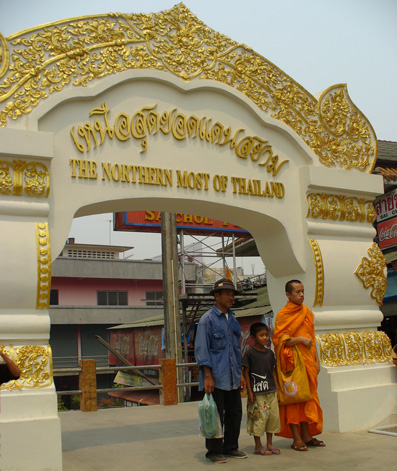
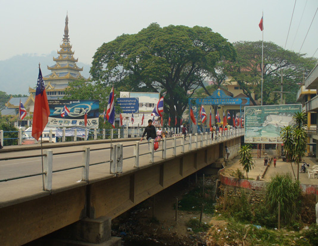
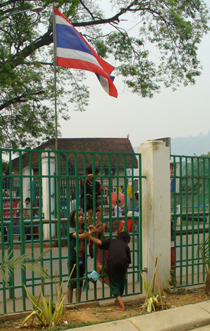
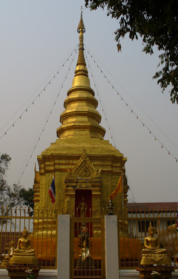
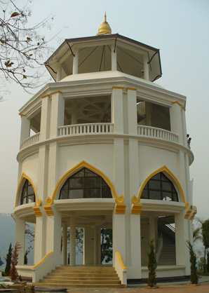
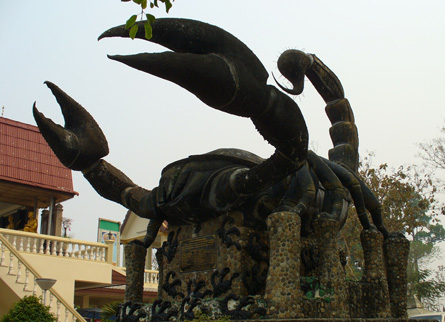
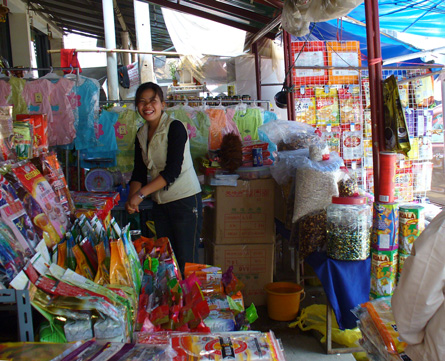

March 29, 2006
Hi Folks,
 Writing to you from Mae Sai, the most northern tip of Thailand.
This is the heart of the area known as the golden triangle, close to the point where Thailand, Laos and Myanmar meet. In the 1700's, Colonial Europe encouraged the cultivation, distribution, and consumption of opium in S.E.Asia; Mae Sai was a major trading link at that time. Over the ensuing years, various factions have held power in the area, but during the later part of the twentieth century, war lords fighting the governments in China and Myanmar held control. Not until the 1990's was Thailand successful in routing the KMT war lords and gaining control. Now a paved highway services the region, Thai language is taught in the school system, and night classes in Thai language are available to adults.
Tourists pose for photos at the gate pictured to the right. That pink building is across the creek, in Tachilek, Eastern Shan State, Myanmar. The three cola ads are in Thailand. As I took pictures at the boarder crossing, three children nonchalantly climbed over the fence on the Thailand side, avoiding the exit formalities. Such action at the border was also a common sight at the Malaysia crossing as well. It does make one wonder just how secure any international borders really are. Like the song says, Wouldn't it be wonderful if the world had no borders? And while we're at it, how about a single international currency?
Besides shopping for Myanmar goods and setting foot in Myanmar, it seems the only other attraction is climbing up a local hill for views of a temple, the town below, and Tachilik across the creek. Took several photos at the top, including the photo of the scorpion. No one explained the reason for this strange statue.
This area is quite different from other parts of Thailand. Other than opium poppies (which I did not see), crops include rice, soy bean, and fruit such as pineapple, papaya, and mango. Stands selling whole pineapple by the kilo or prepared pineapple by the piece line the highway. Building architecture reflects Lanna, Shan, and even Lao styles, especially noted in government buildings and Buddhist temples. Tribal dress is not uncommon in the markets.
Now that the dry season is almost at an end, farmers are burning everything in sight. The sky is perpetually gray, and it seems every bus travels by several fires, some roaring, others smoldering. A lady walks along the side of the highway, pulling a long bamboo poll with burning oil-soaked rags, thereby igniting the leaves and underbrush. Seems no one cares about the benefits of mulch, and the beauty of clear blue skies.
  
 
Hope you are all enjoying life and having as much fun.
Bill
=================================
"Travel is Fatal to Bigotry, Prejudice, and Narrow-minded ness" ....
attributed to Mark Twain